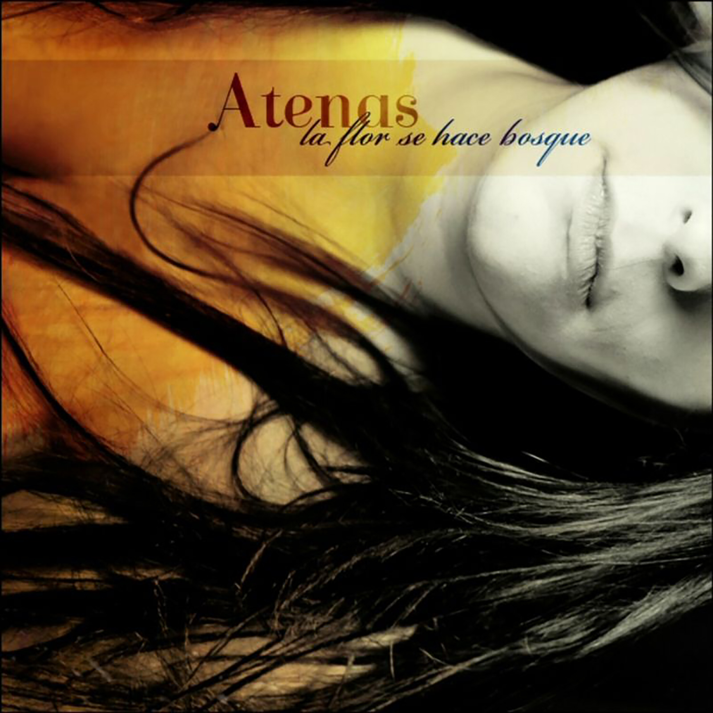
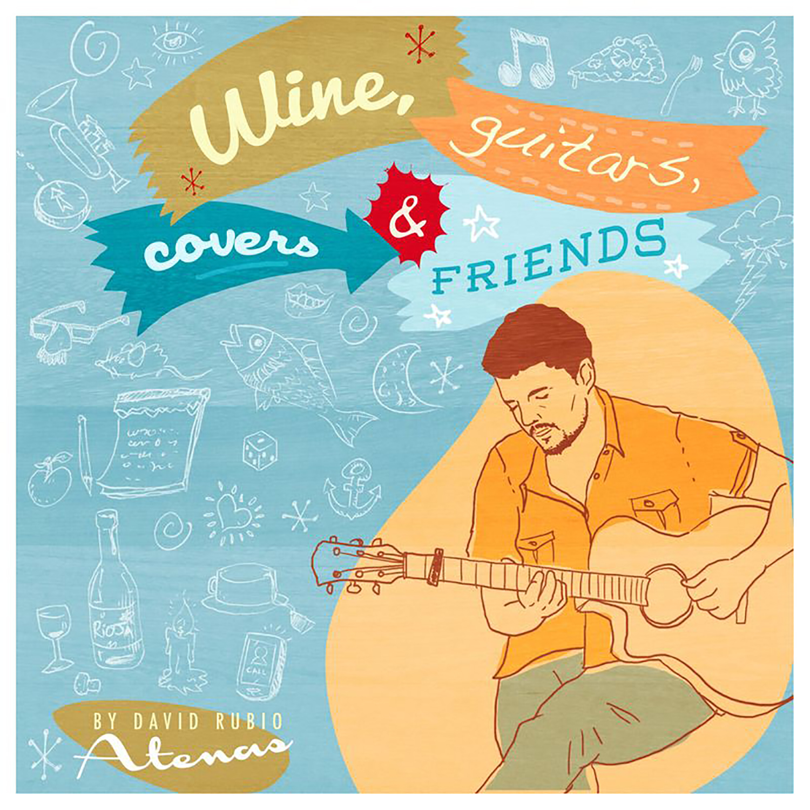
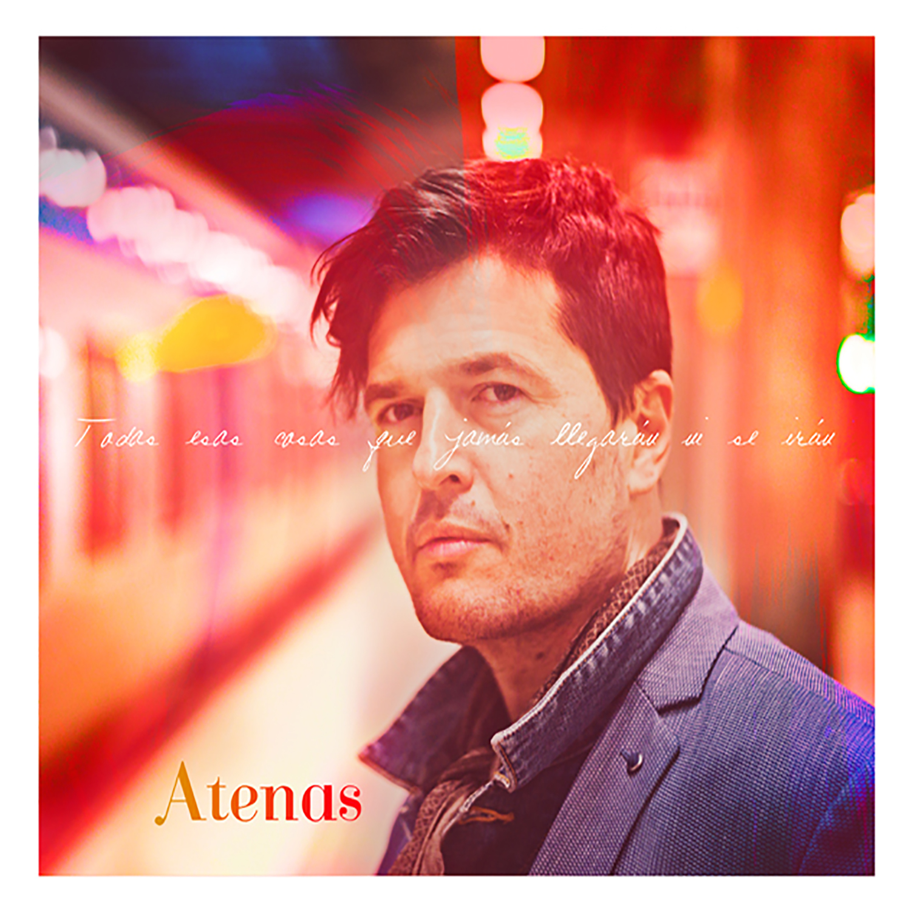
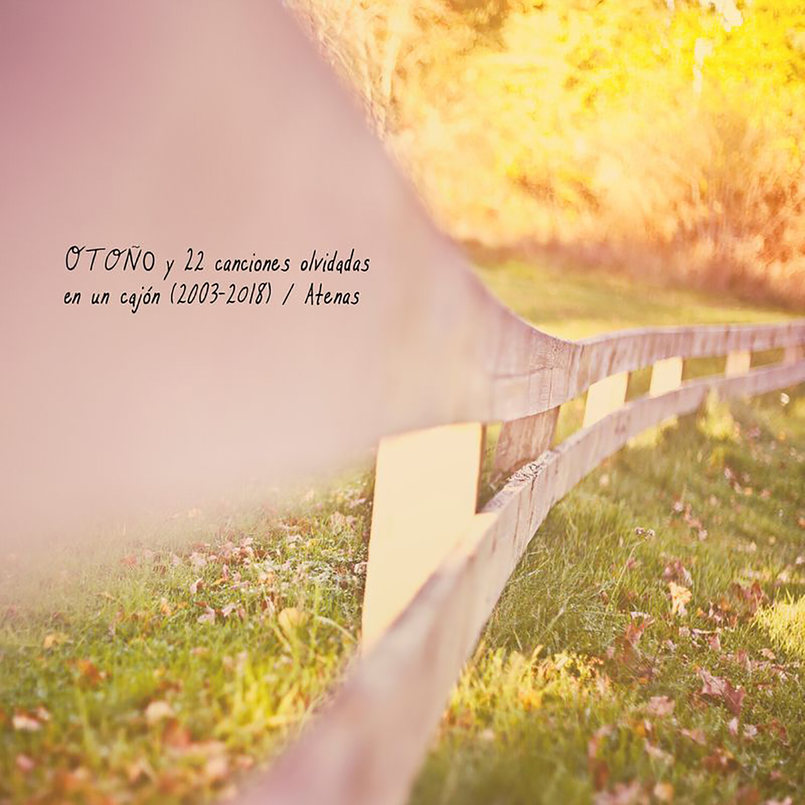
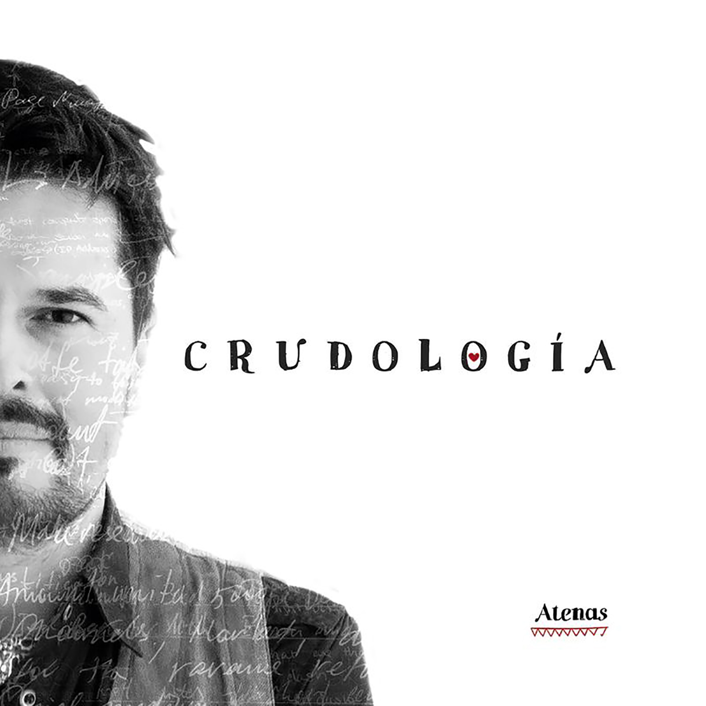

Canciones, lugares e historias
Songs, places and stories
Atenas es un viaje a través de canciones, lugares e historias. Un recorrido que atraviesa ciudades y países, pero también paisajes interiores, recuerdos, encuentros, despedidas y mundos que solamente existen en nuestra memoria.
A lo largo de los años, la música ha tomado muchas formas. Desde el rock, el indie y las guitarras eléctricas hasta las canciones acústicas más íntimas; desde composiciones cargadas de poesía, guitarras y teclados hasta grabaciones espontáneas compartidas con otros músicos. Canciones propias, versiones, experimentos y caminos inesperados que nunca han respondido a una única dirección.
Cada disco pertenece a un momento distinto. Hay canciones nacidas del amor y el desamor, de la necesidad de escapar, de la libertad, de los cambios de vida y de la reconciliación con uno mismo. Algunas surgieron de encuentros con músicos y amigos en lugares como Malta. Otras nacieron de etapas de introspección, de silencios, de rupturas o de la necesidad de volver a lo esencial.
Con el tiempo, Atenas ha recorrido diferentes territorios musicales: discos eclécticos, grabaciones eléctricas y crudas, canciones acústicas desnudas, colaboraciones, versiones reinterpretadas y aproximaciones al country. Una trayectoria sin una fórmula fija, construida a través de experiencias que han ido dejando su huella en cada canción.
Quizá por eso ninguna etapa se parece demasiado a la anterior. Porque cada canción pertenece a un lugar, a una persona o a un instante diferente.
Canciones que nacen de lugares distintos. Historias que a veces no sabemos cómo contar. Música para detenerse un instante y mirar hacia dentro.
Atenas is a journey through songs, places and stories. A journey across cities and countries, but also through inner landscapes, memories, encounters, farewells and worlds that exist only in our minds.
Over the years, music has taken many different forms. From rock, indie and electric guitars to intimate acoustic songs; from poetic compositions built around guitars and keyboards to spontaneous recordings shared with other musicians. Original songs, covers, experiments and unexpected directions that have never followed a single path.
Every record belongs to a different moment. There are songs born out of love and heartbreak, the need to escape, freedom, changes in life and the process of finding one's way back to oneself. Some came from encounters with musicians and friends in places like Malta. Others emerged from periods of introspection, silence, endings or the need to return to what matters most.
Over time, Atenas has explored different musical territories: eclectic records, raw electric recordings, stripped-down acoustic songs, collaborations, reimagined covers and explorations of country music. A journey without a fixed formula, shaped by experiences that have left their mark on every song.
Perhaps that is why no two chapters sound quite the same. Every song belongs to a different place, a different person or a different moment.
Songs born in different places. Stories we sometimes struggle to put into words. Music to stop for a moment and look within.
La música de Atenas
The music of Atenas




Pack digital con 22 canciones en WAV y MP3, imágenes, letras, créditos, agradecimientos y material gráfico del disco. El enlace de descarga se enviará mediante WeTransfer al correo electrónico indicado durante el pago, en un plazo máximo de 72 horas desde la confirmación. Comprueba que la dirección sea correcta para que podamos realizar el envío.
Digital collection with 22 songs in WAV and MP3, artwork, lyrics, credits and additional album material. The WeTransfer download link will be sent to the email address provided at checkout within 72 hours of payment confirmation. Please make sure the address is correct.

Una edición física para quienes disfrutan teniendo la música entre las manos. Un formato que une el objeto y el diseño de un disco con la comodidad de la música digital en una memoria USB.
A physical edition for listeners who enjoy having music in their hands. A format that brings together the feel and design of an album with the convenience of digital music on a USB drive.
Envío incluido en Europa para los formatos físicos. Para envíos fuera de Europa, consulta a través del formulario de contacto.
Shipping within Europe is included for physical formats. For destinations outside Europe, please use the contact form.
Próximas fechas
Upcoming dates
Atenas es un proyecto musical construido a través de canciones e historias. Una mirada personal sobre la identidad, las relaciones, la soledad y las contradicciones de nuestro tiempo. Canciones que no siempre buscan respuestas, pero que dejan algo en quien las escucha.
Atenas grabó su primer álbum en 2000 con Llul, una de sus primeras bandas. El álbum reunía influencias de hard rock, música alternativa, funky y metal, y fue producido por Carlos Escobedo y Alberto Seara (cantante y técnico de Sôber y Savia).
Tras sus comienzos, Atenas ha desarrollado una intensa trayectoria musical tocando con múltiples grupos y publicando un total de cuatro álbumes. Ha compartido escenario con Dover, La Cabra Mecánica, Las Niñas, SKA-P, Ilegales, Los Deltonos, Alis, Nacho Vegas y Zahara, entre otros, actuando en algunas ocasiones con Neumática y muchas otras como solista. En 2005, su banda Estrellas Pintadas De Azul fue nombrada Mejor Grupo del Año por la revista Mondo Sonoro.
En 2009, Atenas llamó la atención de Universal Music Spain y firmó un contrato editorial de tres álbumes, publicando su primer LP oficial en solitario, La Flor Se Hace Bosque. En 2013, se trasladó a Estocolmo para ampliar sus horizontes fuera de España.
Después de Crudología (LP, 2022), Atenas volvió a sus raíces, actuando en Suecia únicamente con voz y guitarra acústica.
Actualmente, el proyecto Atenas se encuentra en una pausa natural mientras David se centra en The Horse With No Name, un proyecto de Americana, folk e indie desarrollado entre Suecia y Nashville. Su álbum debut fue masterizado en Nashville, Tennessee, por John Mayfield, cuyos créditos incluyen Dave Matthews Band, Willie Nelson, Sara Evans, Rascal Flatts, Morgan Wallen y muchos otros artistas reconocidos.
Atenas is a music project built around songs and stories. A personal perspective on identity, relationships, loneliness and the contradictions of our time. Songs that don't always seek answers, but leave something behind in those who listen.
Atenas recorded his first album in 2000 with Llul, one of his first bands. The album was an amalgamation of hard rock, alternative, funky and metal influences, produced by Carlos Escobedo and Alberto Seara (singer and technician of Sôber and Savia).
After his start, Atenas has had a vibrant career playing with multiple groups and releasing a total of 4 albums. He has played with Dover, La Cabra Mecánica, Las Niñas, SKA-P, Ilegales, Los Deltonos, Alis, Nacho Vegas and Zahara, among others, sometimes performing with Neumática and many times as a solo artist. In 2005, his band Estrellas Pintadas De Azul was named Best Group of the Year by Mondo Sonoro magazine.
In 2009, Atenas attracted the attention of Universal Music Spain and was signed to a three-album contract, releasing his first official solo LP, La Flor Se Hace Bosque. In 2013, he moved to Stockholm to broaden his horizons outside Spain.
Following Crudología (LP, 2022), Atenas returned to the basics, performing with only voice and acoustic guitar in Sweden.
Today, the Atenas project is on a natural hiatus while David focuses on The Horse With No Name, an Americana, folk and indie project developed between Sweden and Nashville. The debut LP was mastered in Nashville, TN, by John Mayfield, whose credits include Dave Matthews Band, Willie Nelson, Sara Evans, Rascal Flatts, Morgan Wallen and many other acclaimed artists.